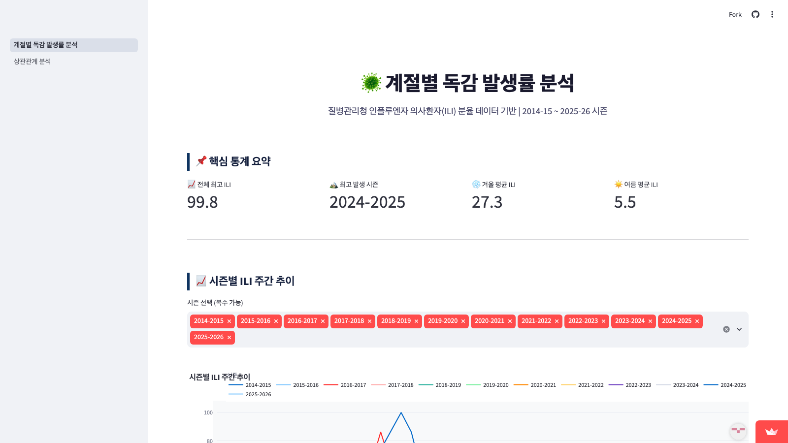
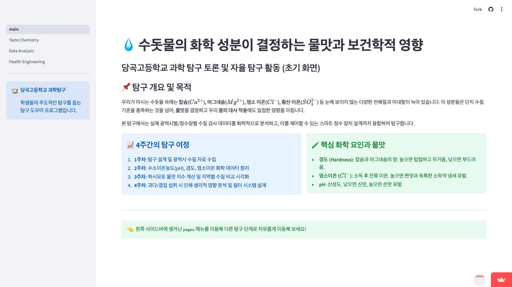
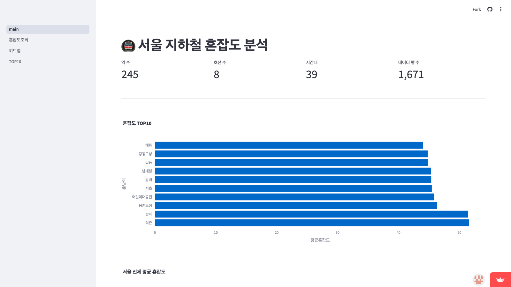

두 수업에서 나온 프로젝트 가운데 여섯 팀을 골라,
결과물과 함께 깃허브에 남은 과정의 기록과 성찰을 정리했습니다.
생물 시간에 배운 효소의 기질 특이성을 3D로 구현했습니다. 효소와 반응물 도형들이 무작위로 떠다니다 모양이 맞는 짝을 만나면 반응해 색이 변하고, 효소는 사라지지 않고 재사용됩니다 — 리스트로 분자들을 관리하고, 중첩 반복문과 절댓값 거리로 충돌을 판정하며, 종류별 반응 횟수를 집계하는 코드입니다.
바늘을 무작위로 던져 선에 닿는 확률로 π를 추정하는 뷔퐁의 바늘 실험을 3D로 만들었습니다. 스페이스를 누를 때마다 무작위 위치·각도로 바늘이 던져지고, 삼각함수로 교차를 판정해 π 추정값이 실시간 갱신됩니다. 코드 주석에 확률 공식 유도까지 적어 둔, 수학×코딩 융합 프로젝트입니다.
바이러스학에 관심 있는 학생들이 감염병 전파를 눈으로 보이게 만든 시뮬레이션입니다. 하얀 공 사이를 돌아다니는 빨간 공이 닿는 공마다 감염시키고, 키를 누르면 "사회적 거리두기"로 확산 속도가 느려집니다.


